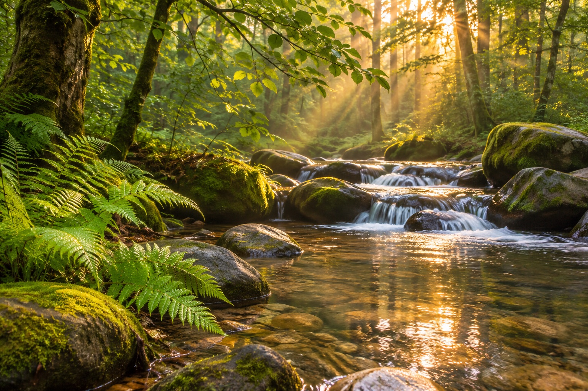

Meditación y calma
Meditación para principiantes: una primera pausa
Puedes probar una pausa sencilla, sin necesidad de alcanzar un estado concreto.
Revisado el

Busca una postura cómoda
Si quieres, siéntate con apoyo o permanece en la posición que te resulte más cómoda. Mantén los ojos abiertos o cerrados según prefieras.
Escucha durante un momento
Presta atención a un sonido cercano y después a otro más lejano. Si tu atención cambia, puedes volver suavemente a escuchar. Respira con naturalidad, sin forzar ni retener el aire.
Termina cuando quieras
No hay una forma perfecta de hacerlo. Puedes interrumpir la práctica si te resulta incómoda. La meditación es una experiencia personal y no sustituye la atención profesional cuando la necesites.